Hi, I’m Parboni.
I’m an interdisciplinary designer who loves making software and products that feel thoughtful, useful and a little bit joyful.
I work where design, research and engineering meet: listening to people, sketching ideas, building them out and refining until they just work.
Off the clock: making coffee, thrifting, and playing Minecraft.
- based inNew Yorker!!
- current roleAI research & contract SWE / PM
- studiedUC Irvine · B.S. Informatics (HCI), minor in CS · ’26
- superpowerturning ideas into things people actually use
| Name | Kind | Year |
|---|---|---|
| Research & data analysis | 2026 | |
| Research & visualization | 2025 | |
| Game · UX research | 2026 | |
| Web · UX design | 2026 | |
| Hackathon · web app | 2025 |
PVT Gamification
- Unity
- C#
- Figma
- usability testing
- problem
- The Psychomotor Vigilance Task (PVT) measures attention by having people tap when a red dot appears. It’s repetitive, so participants, especially kids, lose focus and stop complying.
- what we built
- Sports-themed games (basketball, golf, tennis, darts, soccer and more) that keep the PVT’s scientific structure: a sudden visual cue at random intervals. Every tap is logged with reaction time and sent to the researchers.
- what I did
- Built the Unity/C# cognitive-assessment game from clinical requirements, and refined age-appropriate interfaces with clinicians through iterative usability testing with 30+ users.
- team
- Six students, in partnership with Dr. Katharine Simon’s SLEEP Lab.
“What they’re creating is what we will be using in research with kids.”
Dr. Katharine Simon, Assistant Professor of Pediatrics and director of the SLEEP Lab, in UC Irvine School of Medicine News
Design process
- ExploreWe storyboarded many game concepts (a sleepy bear, a hungry panda, catching fireflies, making a bouquet) to find what kept kids tapping.
- PrototypeEarly 2D versions proved the idea but the targets weren’t clear enough at a glance.
- Rebuild in 3DWe moved to 3D sports scenes in Unity, tested on iPad, and refined with clinicians.
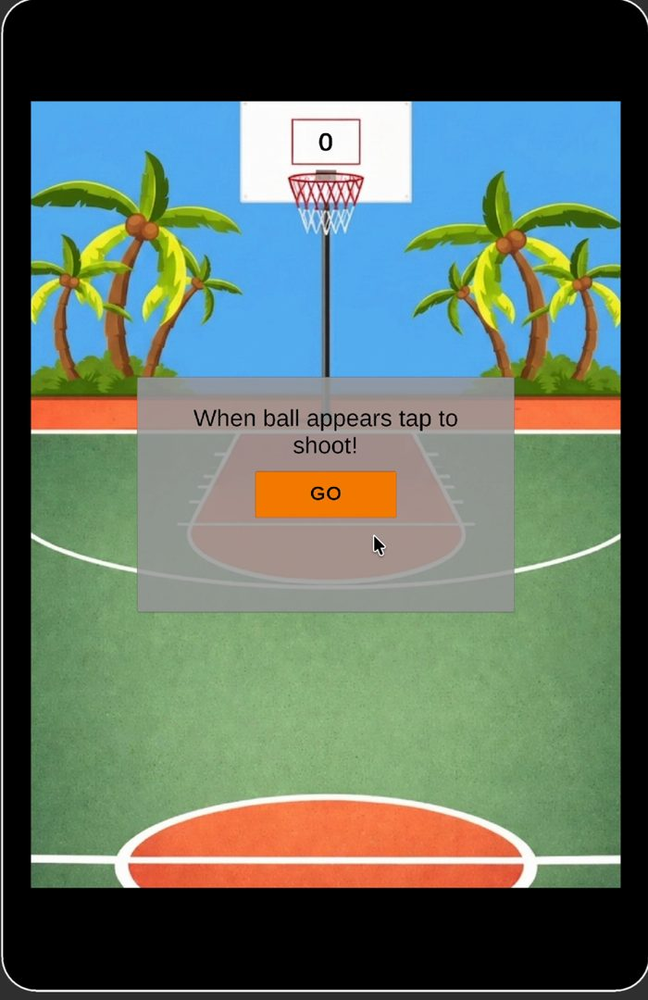
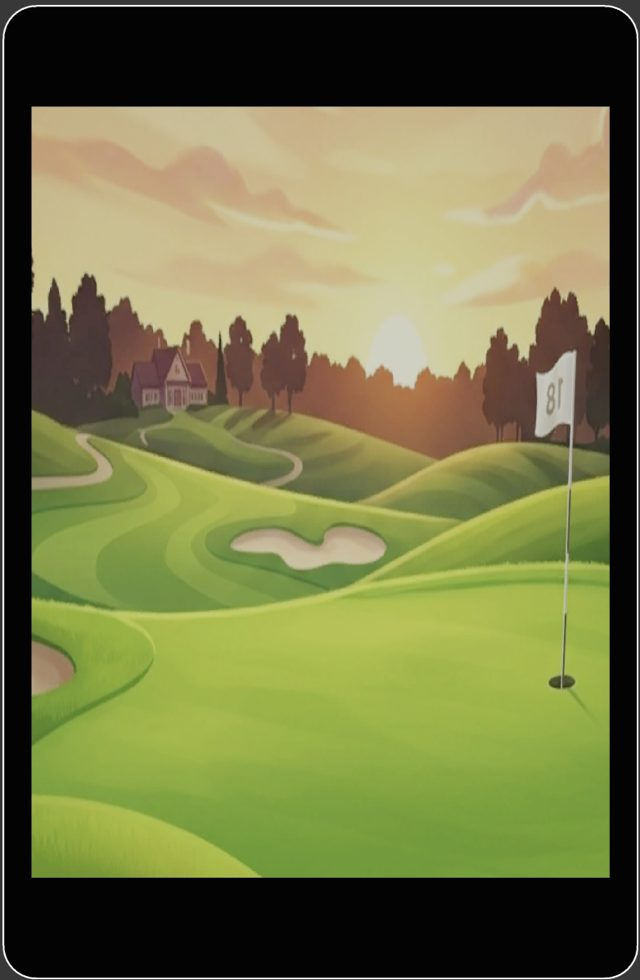
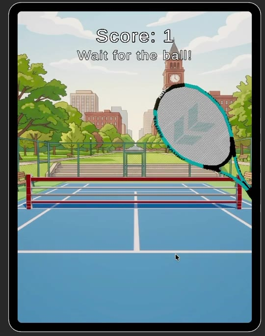
Concept storyboards scroll →
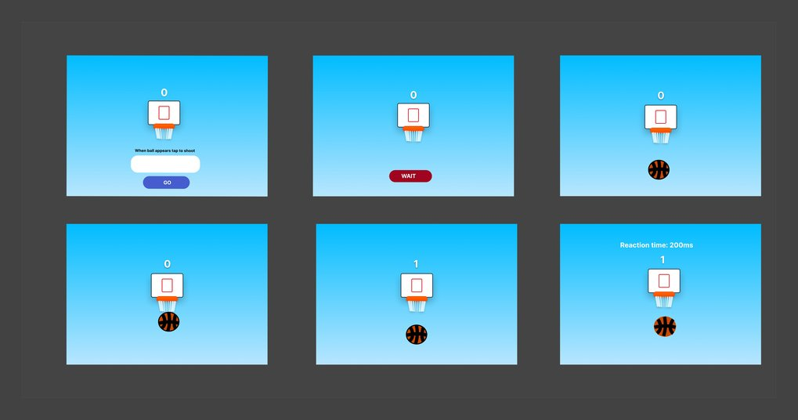
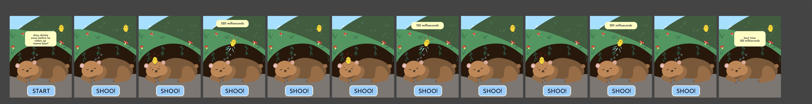
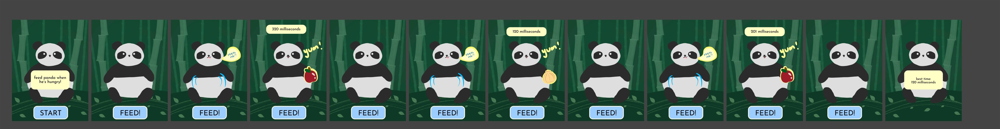
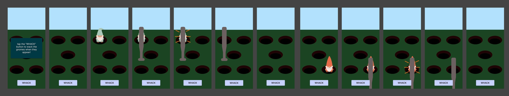
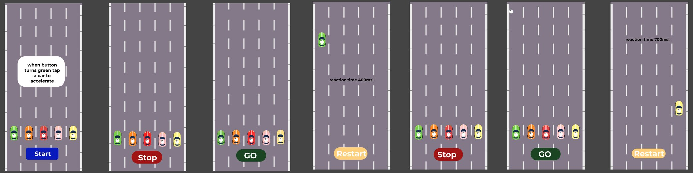
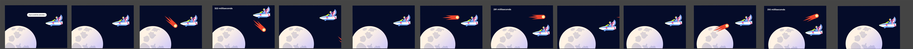
In the news
- UCI ICS News · May 18, 2026Six ICS Students Compete in Capstone Competitions with Games Developed to Help Children Sleep↗
- UC Irvine School of Medicine · May 20, 2026Informatics Students Partner with Pediatrics Professor to Gamify Sleep-Loss Test↗
From the expo floor
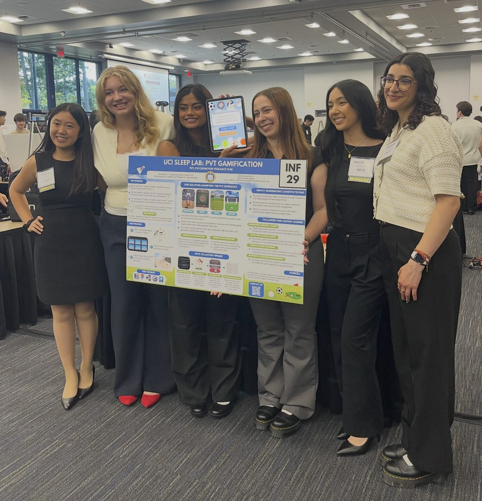
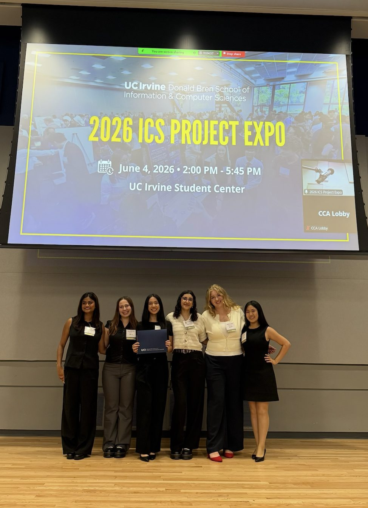
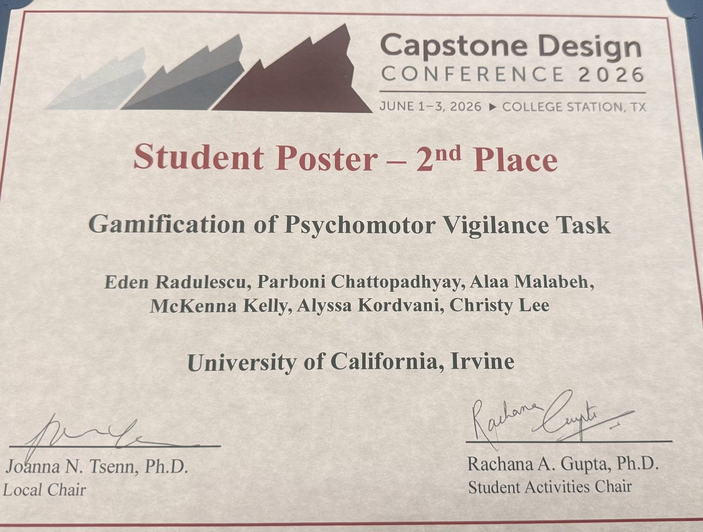
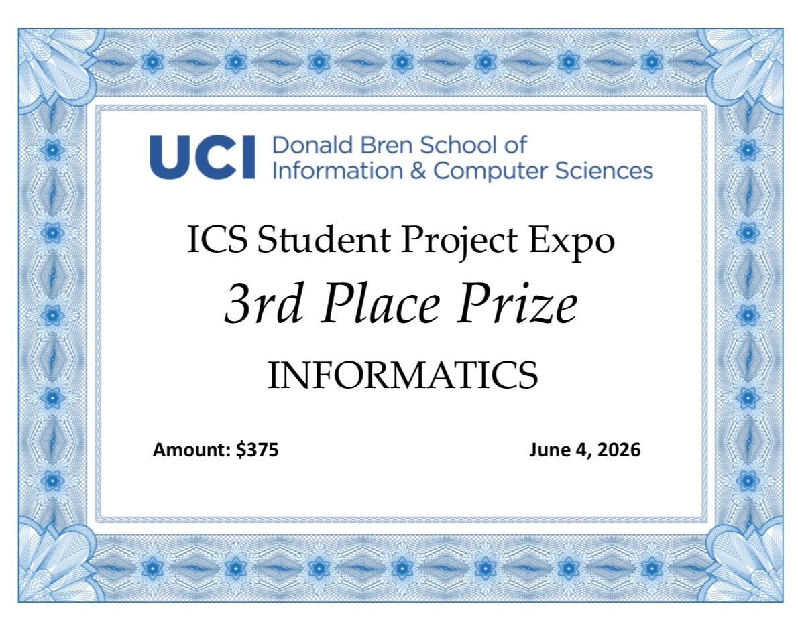
HealthHarmonies
- Figma
- HTML/CSS
- JavaScript
- WCAG 2.1 AA
- mobile-first
- problem
- Music therapy helps with stress, anxiety and pain, but it needs a certified therapist, so it isn’t available to everyone who could use it.
- solution
- A web platform that pairs personalized music with guided journaling: a quick mood and stress check-in, playlists matched to how you feel, and reflection prompts afterward.
- what I did
- Designed responsive, mobile-first interfaces using HCI principles and Figma prototyping, built to meet WCAG 2.1 AA accessibility standards.
Prototype
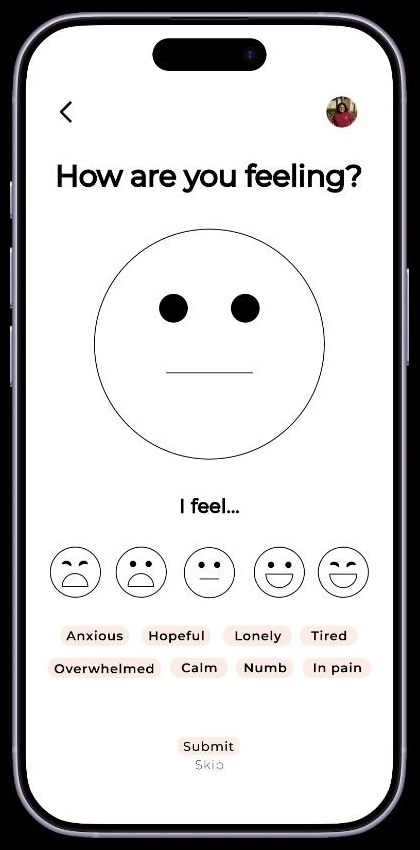
The mood check-in that starts every session: pick how you feel, tag the emotion, then get a playlist and journal prompt matched to it.
Live site
 VenusHacks 2025 · February 2025 · 6th place
VenusHacks 2025 · February 2025 · 6th place
Zot Spot
Helping UC Irvine students quickly find free period products across campus.
- Python
- Flask
- SQLite
- SQLAlchemy
- Leaflet.js
- JavaScript
- HTML/CSS
- Render
- inspiration
- Managing a period on campus is stressful. Some restrooms stock free products, but students can’t tell which ones, whether they’re actually free, or whether they’re in stock right now, which means embarrassment and scrambling between classes, jobs and commutes.
- what it does
- An interactive campus map with live markers, geolocation to find the nearest stocked restroom, pad and tampon stock levels, quick reports when supplies run low, and labels for whether products are free and when each spot was last updated.
- how we built it
- A Flask + SQLite backend that organizes restrooms by building, floor and room; a responsive HTML/CSS/JavaScript front end; Leaflet.js for the map; browser geolocation and the Haversine formula for distance; and timestamped low-stock reports that show up in both the map and list views.
- what I did
- Developed Angular/TypeScript views for location-based inventory, integrated with Node.js low-stock alerts.
- challenges
- Collecting coordinates and room details for dozens of restrooms by hand, fitting clear but detailed info onto small screens (several rounds of layout and usability testing), and estimating realistic walking times.
- what we learned
- Wiring a map to a live reporting backend, working with geospatial and location data, and designing for a sensitive health topic with care and dignity.
- what’s next
- Partnering with UCI wellness and custodial teams on restocking, expanding to other campuses, gender-neutral and anonymous-reporting filters, a restocking analytics dashboard, more product types, and walking directions.
Screens


Student Perceptions and Attitudes Toward Artificial Intelligence in Software Engineering Education at an R1 University
Abstract
This paper presents a large-scale survey study examining undergraduate students’ perceptions and use of generative AI and large language models in software engineering and computing coursework. The dataset enables an analysis of students’ academic standing in their CS program, other key demographics, and a fine-grained examination of potential correlations between their student status and their perceptions of AI. Using established methods and an innovative embedding-space-based analysis approach to analyse close- and open-ended questions together, we identify multiple statistically significant relationships between student characteristics and their views on and use of AI and LLMs. Our analysis reveals several meaningful and significant findings, including (1) students in lower-division courses displayed different views and patterns than their upper-division counterparts; (2) students in introductory computing courses demonstrated differentiated perceptions of AI; and (3) students participating in upper-division capstone courses reported more specialized and purposeful uses of AI and LLMs, thus reflecting the more advanced needs of senior capstone projects. Our findings offer insights for CS educators seeking to understand student engagement with AI in college learning environments, suggesting that perceptions and use of AI are not uniform across the student population but vary significantly with academic maturity and context. This work can further inform pedagogical practices and suggest avenues for future research on the growing importance of AI and LLMs in CS education.
How do students really feel about AI in class?
- survey research
- data analysis
- LLM-assisted coding
- question
- Do computing students’ views on generative AI and LLMs change with how far along they are in their degree?
- the data
- A survey of 1,228 UC Irvine undergraduates in Spring 2024, mixing rating-scale and open-ended questions.
- my role
- Built the Python/Pandas pipelines that cleaned the survey data, coded open-ended answers with LLM help using a codebook, and ran the statistics (chi-squared tests and Cramér’s V).
- findings
- Views on AI aren’t uniform: lower- and upper-division students see it differently, and capstone students use it in more specialized, purposeful ways.
Proceedings forthcoming on IEEE Xplore
Growing plants in space without a gardener
- data visualization
- data analytics
- charts & graphs
- problem
- Plant systems on the ISS rely on manual watering and passive wicking, which leads to uneven moisture, salt buildup, oxygen-starved roots and hours of crew time.
- proposal
- Porous “cryo-aerogel” beads made from regolith simulant, biochar and chitosan, paired with a self-adjusting irrigation controller that reads moisture, pH and flow in real time.
- my role
- Visualization & data analytics (~7 hrs/week) on a 10-person team from nine schools. I made many of the proposal’s graphs, turning sensor targets and system comparisons into charts NASA reviewers could read at a glance.
- targets
- Moisture response from 3–12 hours to under 5 minutes, water-use efficiency from ~70% to 85%+, TRL 2 → 4 on a $10K budget.
Parboni Chattopadhyay
Designer & software engineer · HCI + CS · New York, NY
- 2ndNational Capstone Design Conference ’26
- ICCSE ’26Co-authored research paper
- 1,200+Survey responses analyzed with LLM-assisted coding
- 98%Faster enterprise deployments at Numecent
Experience
-
2026 – now
Software Engineer & LLM Product Manager · Healthcare research group (contract)
Leading product and engineering for an internal AI tool: I scope it with researchers, design it, build it and ship every release, owning the full lifecycle solo.
-
2026
Research Software Engineer · Pediatric Sleep Research Lab, UCI School of Medicine
Built a Unity/C# cognitive-assessment game from clinical requirements and tested it with 30+ users. It won 2nd place nationally.
-
2025
Systems Engineer · NASA L’SPACE
Owned visualization and data analytics for a 10-person NASA mission proposal.
-
2025
Software Engineering Intern · Numecent
Built C++/Win32 deployment tooling and cut firewall-rule deploys from seconds to milliseconds (98%+ faster).
-
2024 – now
Research Software Engineer · AI/LLM Education Impact Research, UCI
Built Python data pipelines and LLM-assisted coding for 1,200+ survey responses, which became an ICCSE ’26 paper.
-
2024 – 2026
Software Engineering Grader · UC Irvine
Reviewed 200+ Python projects a quarter for code quality and design.
Skills
- Design
- FigmaPrototypingUsability testingWCAG 2.1 AARequirements analysis
- Build
- PythonTypeScript / AngularUnity / C#C++SQLCI/CD
- AI & data
- LLM productsPrompt engineeringPandas / ETLStatistical analysis
In the press
UCI ICS News · May 18, 2026 Six ICS Students Compete in Capstone Competitions with Games Developed to Help Children Sleep Interviewed about designing and building the PVT games with Dr. Simon’s SLEEP Lab ↗Education
-
June 2026
University of California, Irvine
B.S. Informatics, Human-Computer Interaction specialization · Minor in Computer Science
Today
you weren’t supposed to look… but here’s what didn’t make the cut
the original red-dot attention testWe turned it into sports games so kids would actually want to play.2D versions of the PVT games3D made the targets clearer, so we rebuilt them.the first drafts of my health tech appIt took a few rounds of iteration to make it feel calm and simple.my old portfolioYou’re looking at its replacement.